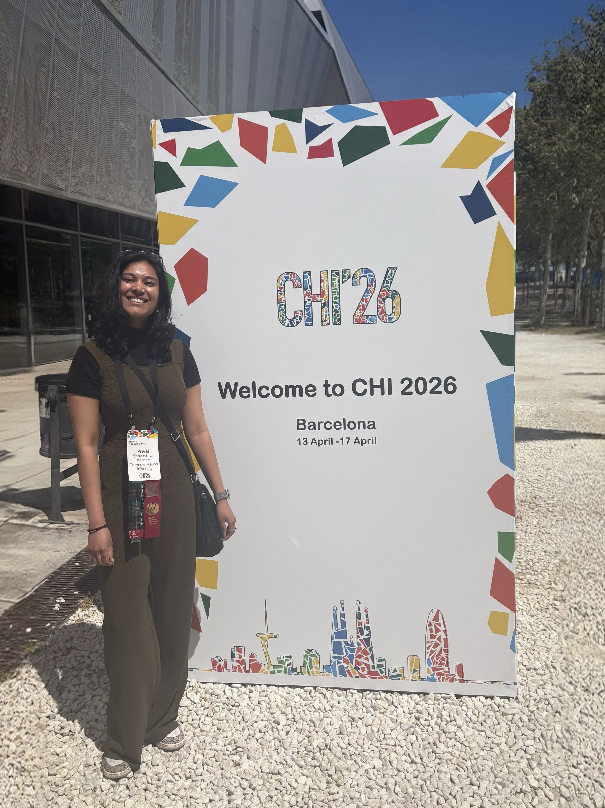
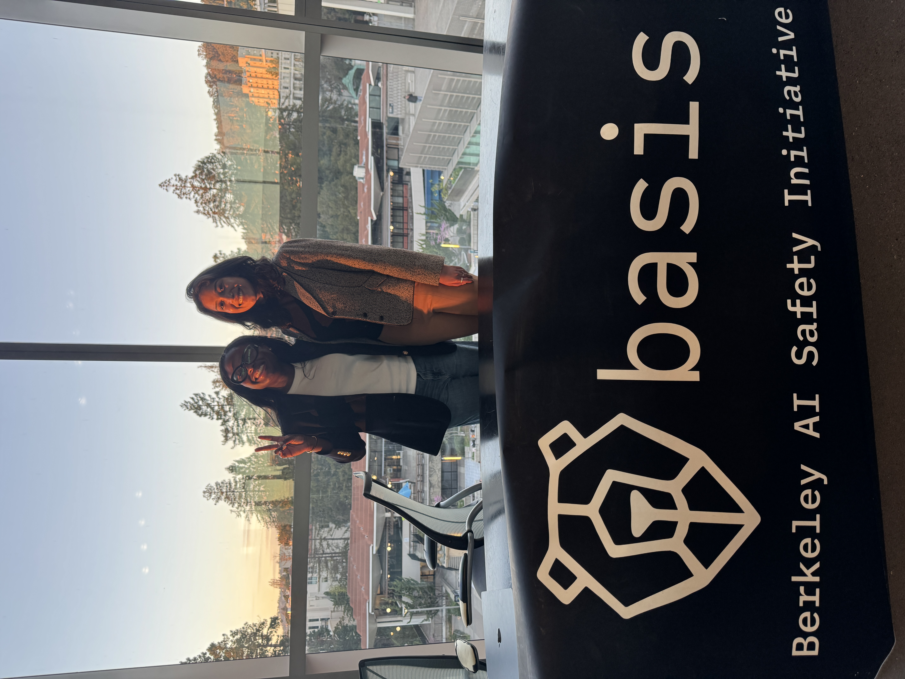

01
The question
How does evidence travel?
Moving between industry, policy, and academia made me increasingly interested in what happens between producing evidence and acting on it.
02
Industry
In industry, research sits alongside commercial incentives and the pressure to act quickly. That proximity to decisions gives it influence, while also shaping which questions receive attention.
Close enough to decisions to have influence. Close enough to incentives to feel their shape.
Research is never entering an empty room.
03
Policy
Policy operates at a different scale. Evidence becomes part of a longer process of negotiation between institutions, public priorities, political realities, and competing ideas of what progress should look like.
04
Academia
Research remains the foundation of how I approach both worlds. Academia offers the depth and independence needed to examine difficult questions properly, although its insights do not always travel easily into practice.
Depth matters. So does the distance between an insight and the place it needs to reach.
05
The space between
I am less interested in choosing one of these worlds than in building stronger connections between them: producing careful research, understanding the conditions surrounding a decision, and helping evidence become useful without pretending it can, or should, make the decision by itself.
06

